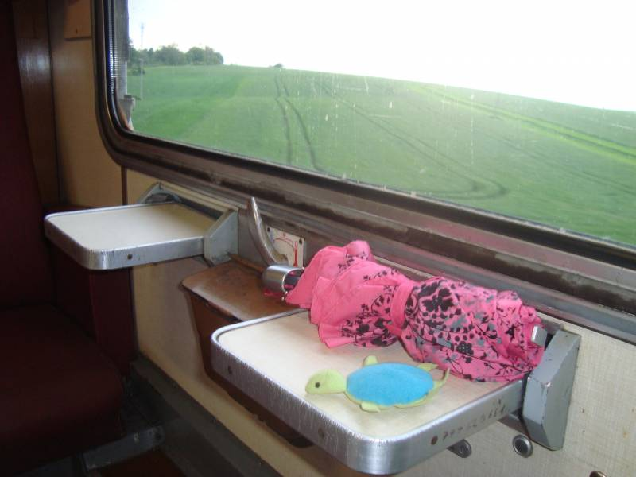

Co jiného zvolit na úvod posledního jedenáctého dne v Massachusetts a zároveň na závěr celého zaoceánského dobrodružství, než starou dobrou pecku od starých dobrých Bee Gees ;-)…nebo od Vaška Neckáře, chcete-li :-)…
http://www.youtube.com/watch?v=w37JjL44Rlk
Ráno je našim prvním úkolem sbalit se, což při velikosti našeho pokoje není zrovna nejjednodušší. Skáčeme tam přes sebe navzájem a teprve když se mi podaří odtlačit mou matraci do chodby, dá se tam jakžtakž pohybovat.
Dopoledne ještě prolítáme pár obchodů se suvenýry. Strýcovi do KM vezeme univerzitní tričko :-), strýcovi do Veselí knížku o Bostonu a babičce hrníček s nápisem Harvard Grandma :D a nějakou kosmetiku. Po úspěšných nákupech si zajdeme naposledy i s Lukem na oběd do asijské restaurace, kde se mi podaří omylem sníst chilli papričku - brašule, který se baví mým hysterickým výlevem a hašením hrdla, si bez rozpaků druhou papričku strčí do pusy a s ledovým klidem praví, že to “není žádná hrůza” :D…Poslední zmrzlina v Cambridge, poslední nákup v Harvard shopu (pravé bostonské panáky, kdo by odolal :D…) a už je čas vrátit se na privát. Brácha nám jede vytisknout letenky a za hodinu pro nás přijíždí taxík…
Cesta přes Atlantik tentokrát probíhá překvapivě příjemně. Letíme po větru a tudíž o hodinu méně než opačným směrem. První dvě hodiny se úspěšně bavím čtením, pak se roznáší večeře a pak už se to začíná trochu vléct - přepínám postupně ze Simpsonů, Přátel a Sexu ve městě na svůj nejoblíbenější kanál - pohybující se letadýlko :D. Nakonec mi zhasnou světlo, a tak se se sluchátkama na uších rozhodnu pokusit se zdřímnout. Spíš jen tak poklimbávám, ale únava už na mě pomalu doléhá. Probudí mě opět až snídaně v podobě přeslazeného brusinkového mufina a to už do naší cílové destinace zbývá necelá hodinka.
V 5 ráno naše letadlo přistává na londýnském Heathrow…konečně stojím na půdě evropského kontinentu. Pro přílet jsme si snad ani nemohli vybrat hezčí čas. Britské ostrovy se právě probouzejí do nového dne a nad Londýnem začíná svítat :-)…Přestože se mi únavou z dlouhého letu zavírají oči, jsem i touhle tváří Anglie opět unešená. A hlavně si připadám už tak blízko domova ! Na Heathrow čekáme na další spoj 5 hodin (stávkující British Airways opět nezklamali 8-)…). Zatímco naši nakupují v duty free čokoládu pro babičku, snažím se luštit sudoku, nicméně po několika minutách tupého čučení do mřížky se natáhnu přes několik sedaček, přetáhnu přes hlavu kapuci a podřimuju. Poté, co se naši vrátí, zajdeme si všichni sednout do kavárny, kde udělám největší chybu svého života a dám si před letem velký kelímek kávy, abych překonala únavu. Tlak mi stoupne tak, že jsem fakt přesvědčená, že to se mnou tam nahoře sekne. Přestože už nás čekají jen dvě hodinky ve vzduchu, ta první je tím největším utrpením za celou dovolenou :D. Je mi tak blbě, že jenom skučím do palestíny a ani nemám sílu vyndat Božku z kabelky. Uleví se mi, až když se odvážím trochu se projít po letadle. Pak nakonec vytáhnu i MP3ku a nechám se ukolébat českým folkem - a než se naděju, už se hlásí, že za chvíli budeme přistávat na vídeňském letišti.
Tam už na nás čekají teta se strýcem a vezou nás k nim do Veselí. Cestu víceméně proklimbám na zadním sedadle, vzpamatuju se až u nich, kdy odmítnu pozvání na kafe (další dávka kofeinu už by mě opravdu musela zabít), strýc se mi směje, že se sám s vysokým tlakem léčí, a už mi nalívá panáka vodky. Napřed se cukám, ale nakonec usuzuju, že fakt, že jsme se všichni v pořádku živí a zdraví vrátili domů, se musí spláchnout něčím tvrdším. A tak ho tam kopu :D a vytahuju noťas, aby se strýc mohl podívat na fotky…
O nějaké čtyři hodiny později už sedíme i s Boženkou samy v kupé vlaku směřujícího do Brna. Máme za sebou celý den cestování ve vzduchu, po silnici i po kolejích. Jediné, co nás ještě pořád udržuje na nohou/v krunýři je osoba, která na nás čeká na hlaváku pod hodinama :-)…A tak koukáme z okna, jak okolo ubíhá krajina (trochu nám v ní chybí ty mrakodrapy :D) a říkáme si, jak je zatraceně fajn být po všech těch dobrodružstvích zase doma :-)…

Vracíme se domů :)
A musim si rýpnout - Britové by s tebou určitě nesouhlasili, že jsi při výstupu na Heathrow stanula na evropském kontinentě :-D